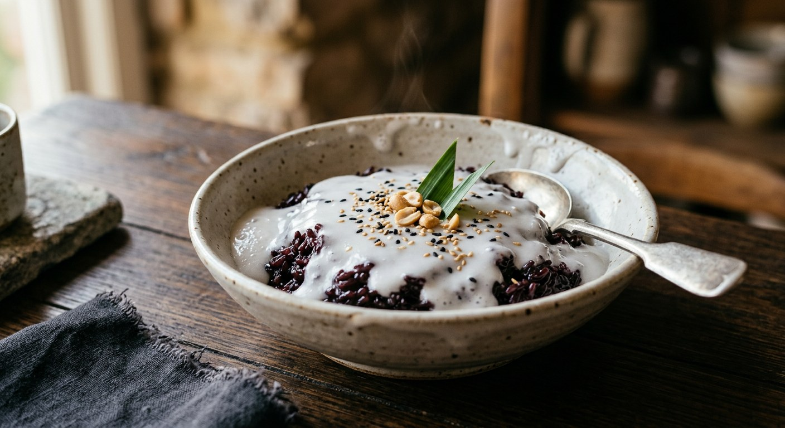

Sticky rice simmered into a warm, sweet porridge and finished with a slick of salted coconut cream — Thailand's rice pudding, made for longan season and eaten hot.

ข้าวเหนียวเปียก splits into ข้าวเหนียว, sticky rice, and เปียก, "wet" — the name is the method. The same rice that is steamed dry and glossy for khao niew moon with mango goes into this pot with water and sugar and comes out a warm porridge instead, every grain swollen translucent, under a slick of salted coconut cream. Where the mango version is the dessert of the wedding tent, this one is the dessert of the kitchen table.
The classic bowl is white rice with longan (ลำไย) — the dish appears exactly when longan floods the markets. Pim's mother bought five kilos of it and told her daughter to make the pudding for the neighbours; Krua's writer found longan at forty baht a kilo in the supermarket and did the same. But the longan bowl is only the newest version. The black-rice bowl (ข้าวเหนียวดำเปียก), which the Pantip cook makes with coconut milk squeezed from coconuts he climbed himself, is the older form, and Wongnai's sweet-potato bowl shows how far the idea stretches: anything sweet, boiled with the rice, is the dish.
The rice variety matters, and every source names the same one: ข้าวเหนียวเขี้ยวงู (khao niew kiao ngu, "snake-fang rice") — long, fine grains that stay separate and glossy when boiled. And the salt matters equally: the cream on top is salted, on purpose, so the first spoonful is sweet rice meeting a salt edge. That contrast is the whole dessert.
| Thai | English | Amount |
|---|---|---|
| ข้าวเหนียวเขี้ยวงู | Sticky rice, ideally khao niew kiao ngu | 250 g |
| น้ำเปล่า | Water | 1.4 L |
| ลำไย | Longans, stoned | 300 g |
| น้ำตาลทราย | Sugar | 180–230 g |
| เกลือป่น | Salt | ½ tsp |
| ใบเตย | Pandan leaves, knotted | 1–2 |
| หัวกะทิ | Head coconut cream (topping) | 400 ml |
| เกลือป่น (หน้ากะทิ) | Salt, for the topping | 1 tsp |
| สารส้ม | Alum crystal, for the rinse water (optional) | 1 small lump |
The black-rice bowl (Wongnai): 100 g black sticky rice boiled in 2 cups of water for about 25 minutes, stirred until the grains open and the water thickens, sweetened with 2 tbsp brown sugar, a spoonful of coconut milk stirred through (no more, or the colour turns), served with cubed sweet potato and more coconut milk on top. The young-coconut bowl (Pim): 500 g rice, 1.5 kg longans, 750 g sugar, the flesh of two young coconuts, boiled in jasmine-floated water or coconut water, with a topping of head coconut cream thickened with half a tablespoon of wheat flour. The tart (Krua): the same porridge stiffened with a sheet of gelatine and baked into a tart shell — proof the dish travels.
Old rice or new. Pim is firm: use old-crop sticky rice, because new-crop rice turns to mush before it is cooked through. Cheewajit agrees, though it allows new rice if you watch the pot closely. TrueID's recipe, written in longan season, calls for new khao niew kiao ngu and never mentions the age of the crop. The safe reading: old rice forgives, new rice punishes.
The alum wash. Pim swishes an alum crystal through the rinse water and Cheewajit soaks the rice in it for ten minutes, both to strip the rice gum and leave the grains shiny. TrueID and Krua rinse with plain water only and say nothing about alum. The bowl comes out fine either way; the alum bowl is the prettier one.
When the rice is done. Cheewajit and Wongnai cook until the grains open (บาน) and the water thickens. TrueID and Krua say stop before they open — just translucent, still whole, or the dish "becomes paste". Pim sits between: barely open, with the pot watched. Two different porridges, both sold under the same name.
The topping. TrueID's cream is simply head coconut cream, salt and pandan, heated to the boil. Pim thickens it with half a tablespoon of wheat flour; Cheewajit with a tablespoon of rice flour. Wongnai skips the pot entirely and spoons plain coconut milk over the bowl. And TrueID salts its cream harder than the others — a full teaspoon and a quarter for half a litre — betting on the salt-sweet contrast more than anyone else.
This recipe is translated from the following Thai-language sources. Where they disagree, we've said so.
1. TrueID Food — "สูตรขนมไทย ข้าวเหนียวเปียกลำไย หวานอร่อย พร้อมเทคนิคข้าวเหนียวนุ่มไม่อืด" by Maysylvie (the recipe used here; the one-direction stirring rule) — food.trueid.net
2. Pim.in.th — "ข้าวเหนียวเปียกลำไย-มะพร้าวอ่อน" (the old-crop rice rule, the alum wash, the young-coconut bowl) — pim.in.th
3. Cheewajit — "ข้าวเหนียวเปียกลำไย ขนมหวานแบบไทย" by A Cuisine (the healthy small-batch version; rice flour in the topping) — cheewajit.com
4. Wongnai — "สูตร ข้าวเหนียวเปียกมันหวาน" by หลานคุณย่า (the black-rice and sweet-potato bowl) — wongnai.com
5. Krua.co — "ทาร์ตข้าวเหนียวเปียกลำไย ขนมฝรั่งหัวใจไทย" by ณวรา เปลี่ยนบุญเลิศ (the sugar-timing warning; the tart that proves the dish travels) — krua.co